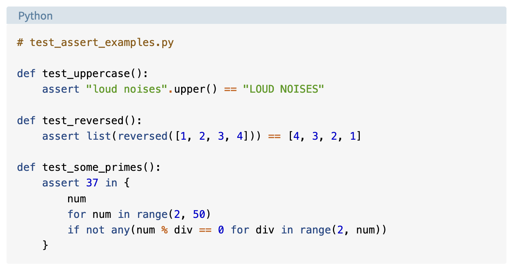

Open Science and
Research Software Engineering
Workshop
Center for Advanced Internet Studies (CAIS)
Introduction
> whoami
Quirin Würschinger
q.wuerschinger@lmu.de
Wissenschaftlicher Mitarbeiter and PostDoc in (computational) linguistics
LMU Munich

Current work
- research
- lexical innovation on the web and in social networks
- variation and change in language use and social polarization in social networks
- using Large Language Models (LLMs) like ChatGPT for research in linguistics and social science.
- teaching: corpus linguistics and research methodology
Promoting Open Science in (computational) linguistics at LMU
- teaching and applying reproducible corpuslinguistic methods
- creating and sharing corpora among researchers and students
Workshop materials
- GitHub repository
- https://github.com/wuqui/opensciws
- slides
- https://wuqui.github.io/opensciws/opensciws_slides.html
- website version
- https://wuqui.github.io/opensciws/opensciws_website.html
Open Open Science workshop
Focus on …
- ask questions
- discuss
- apply and practice
- collaborate
Time table
| Topic | Start | End |
|---|---|---|
| intro | 09:00 | |
| Open Science principles | 10:30 | |
| ~ | ||
| version control | 10:50 | |
| project structure | 12:00 | |
| ~ | ||
| code | 13:15 | |
| data and methods | 14:40 | |
| ~ | ||
| publishing | 15:00 | |
| authoring | 15:25 | |
| recap, open issues, feedback | 16:00 | 16:30 |
Addressing different backgrounds and goals
Backgrounds and interests
CAIS: Forschung zu Digitalisierung und Digitale Gesellschaft
research fiels
- education and pedagogy
- political science
- sociology
- communications studies
- …
data and methods
- qualitative interviews
- text analysis
- quantitative surveys
- experimental designs
- social media studies
- …
Survey: main interests
- reproducible workflows
- managing files and folders
- programming with Python and R
- plain text authoring
- data and methods
- text analysis
- social media analysis
- questionnaires
- publishing
- sharing data and code
- authoring papers
Who are you?
Please briefly introduce yourself …
- name
- place and position
- your research interest in about 3 sentences for someone outside your field
Open Science principles
What is Open Science?
Why should we do Open Science?

- dataset/sample size
- effect sizes
- selection/number of relationships
- flexibility in design
- financial interests
- hype around topic/field
What are the reasons why science can go wrong?


Principles of Open Science
09:20
Open Science lifecycle

Roles in Open Science
- Funders
- make open science part of the selection process, and conditions for grantees conducting research.
- Publishers
- make open science part of the review process, and conditions for articles published in their journals.
- Institutions
- make open science part of academic training, and part of the selection process for research positions and evaluation for advancement and promotion.
- Societies
- make open science part of their awards, events, and scholarly norms.
- Researchers
- enact open science in their work and advocate for broader adoption in their communities.
Who profits from Open Science?
What is Open Science to you?
What do you find interesting, important, or attractive about Open Science?
09:50
Learning outcomes

Implementing an open and reproducible workflow
- version control
- project structure
- code
- data and methods
- authoring
- publishing
Version control
Why use version control?

git and GitHub/GitLab
- git
- software on your machine

git add src/tests.py
git commit -m 'add tests'
git push- GitHub and GitLab
- services on a remote server
Collaborating using GitHub
git commands
GitHub workflow
Example
How to set up a GitHub repository
set up git
Installing git: see tutorial
Using git:
set up GitHub
- setting up git user information (name, passwort)
- setting up GitHub authentication
- setting and storing authentication (‘token’)
create a repository on GitHub
- (create GitHub account)
- click on
New(https://github.com/new) - specify repo name 3
- specify description
- specify visibility: private or public
- select
Add a README file - specify licence 4

clone repositories
go to the folder where you want your project to live

git clone https://github.com/wuqui/opensciws.gitadding, commiting, and pushing changes
git add src/tests.py
git commit -m 'add tests'
git pushProject structure


Let’s not pretend we’re all geniuses …
File names

File names should be:
- machine-readable
- human-readable
- consistent
- avoid non-ASCII characters (e.g. umlauts like ü, ä)
- optional: play well with default ordering (e.g. include timestamps)
File structure
.
├── analysis <- all things data analysis
│ └── src <- functions and other source files
├── comm
│ ├── internal-comm <- internal communication such as meeting notes
│ └── journal-comm <- communication with the journal, e.g. peer review
├── data
│ ├── data_clean <- clean version of the data
│ └── data_raw <- raw data (don't touch)
├── dissemination
│ ├── manuscripts
│ ├── posters
│ └── presentations
├── documentation <- documentation, e.g. data management plan
└── misc <- miscellaneous files that don't fit elsewhere
- General principle
- keep the ‘inputs’ of your project/code (e.g. data) separate from its outputs (e.g. plots).
Practice: project management
You have until 11:50 h to work on either …
- developing a project structure for your needs from scratch
- refactoring/cleaning an existing project5
Optionally: set up version control via git/GitHub for this project.
Code
Reproducibility
Reproducibility (crisis)

Reproducibility et al.


interesting for student projects
The quality of tools
Testing code
Why we should test code
not all our projects have that high stakes
Professional testing
same is true of industry
Types of tests
Analogy
- during the process of manufacturing a ballpoint pen, the cap, the body, the tail, the ink cartridge and the ballpoint are produced separately and unit tested separately.
- When two or more units are ready, they are assembled and integration testing is performed, for example a test to check the cap fits on the body.
- When the complete pen is integrated, system testing is performed to check it can be used to write like any pen should.
- Acceptance testing could be a check to ensure the pen is the colour the customer ordered.
Testing example
using pytest for Python

Documenting code
Literate programming
- ’Literate programming is a methodology that combines a programming language with a documentation language,
- thereby making programs more robust, more portable, more easily maintained,
- and arguably more fun to write than programs that are written only in a high-level language.
- The main idea is to treat a program as a piece of literature, addressed to human beings rather than to a computer.
- The program is also viewed as a hypertext document, rather like the World Wide Web. (Indeed, I used the word WEB for this purpose long before CERN grabbed it!)’
psychological benefit: conversation - helps reasoning - more fun (human) - → ChatBots
Notebooks
- who uses notebooks?
- which ones?
- good for novices & experts
Example using nbdev for Python
Programming a deck of cards: https://github.com/fastai/nbdev_cards/
Literate testing with nbdev
compare with pytest: much easier/natural
Additional benefits of nbdev
- simple, integrated testing
- continuous integration
- dependency management
- publishing code for PyPI and conda
- publishing documentation via Quarto
- good for novices & experts
- covers about 80% of programming setup for free
- more about Quarto later
R: Quarto and RMarkdown
benefit: visual editor
Licensing
Other materials
Data and methods
Diversity in data and methods
CAIS: Forschung zu Digitalisierung und Digitale Gesellschaft
research fiels
- education and pedagogy
- political science
- sociology
- communications studies
- …
data and methods
- qualitative interviews
- text analysis
- quantitative surveys
- experimental designs
- social media studies
- …
FAIR data
The case of Twitter
- stage 1: access costly & legal grey area for scraping
- stage 2: Research API 🎉
- stage 3: Elon Musik → X → …
Data and methods
get active: see https://tinyurl.com/opnsci
Publishing
Open access
The Turing Way tutorial on open access
Routes to open access publishing
Preregistration
What is preregistration?
When you preregister your research, you’re simply specifying your research plan in advance of your study and submitting it to a registry.
Preregistration separates hypothesis-generating (exploratory) from hypothesis-testing (confirmatory) research.
- Both are important.
- But the same data cannot be used to generate and test a hypothesis, which can happen unintentionally and reduce the credibility of your results.
- Addressing this problem through planning improves the quality and transparency of your research.
- This helps you clearly report your study and helps others who may wish to build on it.
The preregistration process

Avoiding pitfalls through preregistration

{kind=link}
{kind=link}
{kind=link}
{kind=link}
HARKing: hypothesizing after results are known
Outlets
- ArXiV
- preprints
- Zenodo
- all kinds including data, code, preprints, etc.
- GitHub and GitLab
- code, software
- Open Science Framework
- all kinds including data, code, preprints, preregistration, etc.
- Software Heritage
- archival of code (long-term)
- Papers with Code
- code and data for and with papers, mostly Machine Learning
- …
Authoring
Markdown syntax
Benefits of Markdown
- Markdown provides semantic meaning for content in a relatively simple way
- You can write rich formatted content extremely quickly (compared to writing directly in HTML tags)
- You can read Markdown easily in plain text before rendered by HTML
- It doesn’t interrupt your workflow with the need to click buttons
- It’s platform-agnostic so your content is not tied to the format of your editor
Quarto
Multi-purpose publishing
Code
Python
R

Multi-format publishing
see the Quarto gallery
Articles
Presentations
Websites
Personal websites and blogs
Demo
Demo repository: https://github.com/wuqui/opensciwsdemo
Recap, open issues, feedback
- version control
- project structure
- code
- data and methods
- authoring
- publishing